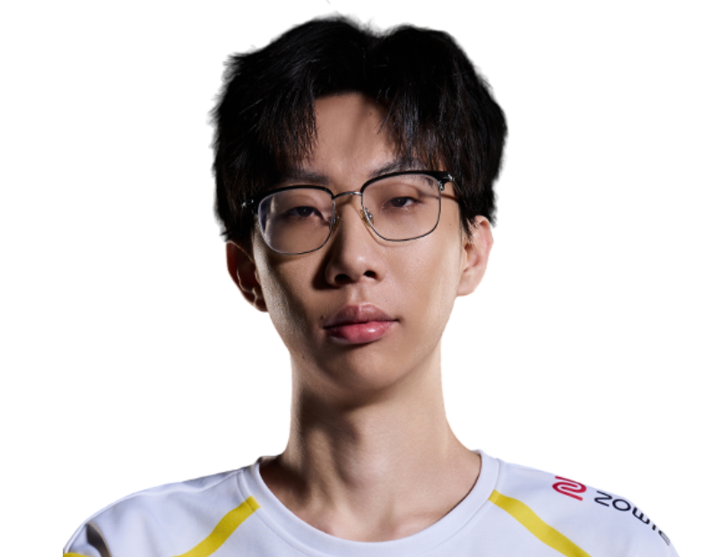

Trace Esports / 张展鹏
LuoK1ng.
ALL IN. EVERY ROUND.OmenLuoK1ng / 张展鹏
LuoK1ng / TE
ONE NAME.EVERY ROUND.ALL IN.
张展鹏，Trace Esports。
从每次选下英雄，到每次站上赛场。
LuoK1ng / 赛场影像MOMENTS
MOMENTS
THAT MATTER.
LuoK1ng.
Trace Esports
每一瞬间，都是比赛的一部分。
Riot Games / 官方赛场影像
LuoK1ng / 职业英雄池
DIFFERENT AGENTS.
SAME PLAYER.
从最熟悉的英雄，看到每一种打法。幽影
Omen.
43% 全英雄使用占比
200职业出场地图
186.6平均战斗评分 ACS
0.95击杀 / 死亡 K:D
2,787总击杀
194首杀
VLR 全时期职业数据 · 2026-11-02 快照 · 出场单位为地图，使用占比不是胜率。查看原始统计 ↗
LuoK1ng / 比赛记录ONE PLAYER.
ONE PLAYER.
EVERY ROUND.
466职业地图
6,600总击杀
1.00全英雄 K/D
CN EVO 26: Act 3 Ro16
TE / UR0 : 2+
VCT 26: CN Stage 2 Playoffs ⋅
LR1
TE / AG1 : 2+
VCT 26: CN Stage 2 Playoffs ⋅
UBQF
TE / BLG1 : 2+
VCT 26: CN Stage 2 Play-Ins ⋅
LBF
TE / JDG2 : 0+
VCT 26: CN Stage 2 Play-Ins ⋅
LR3
TE / DRG2 : 1+
最近已收录系列赛；生涯总计由全英雄表求和，K/D 为总击杀除以总死亡。

下一位 / TE 阵容